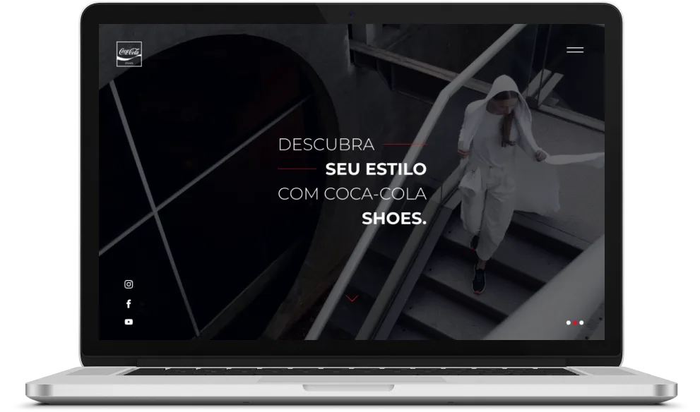
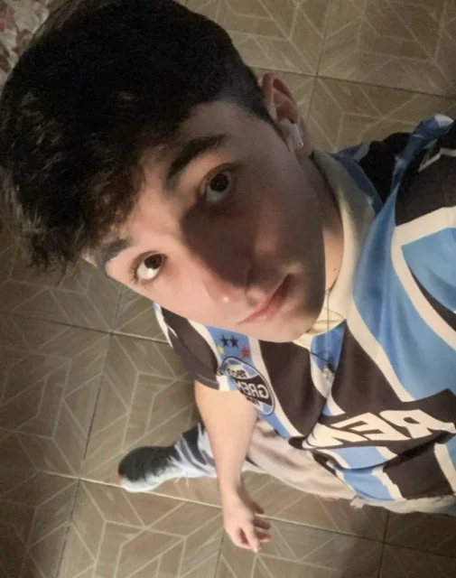
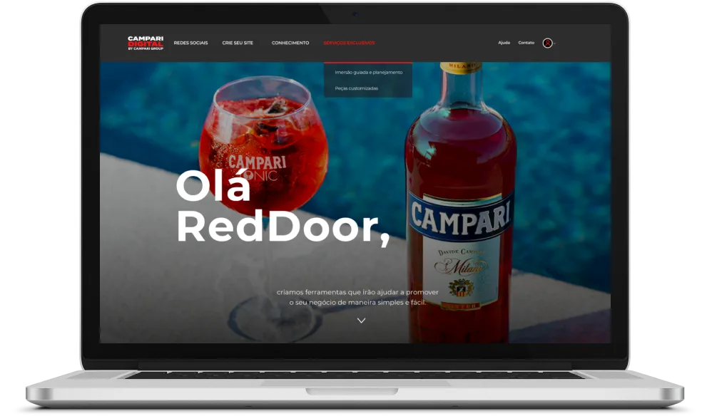
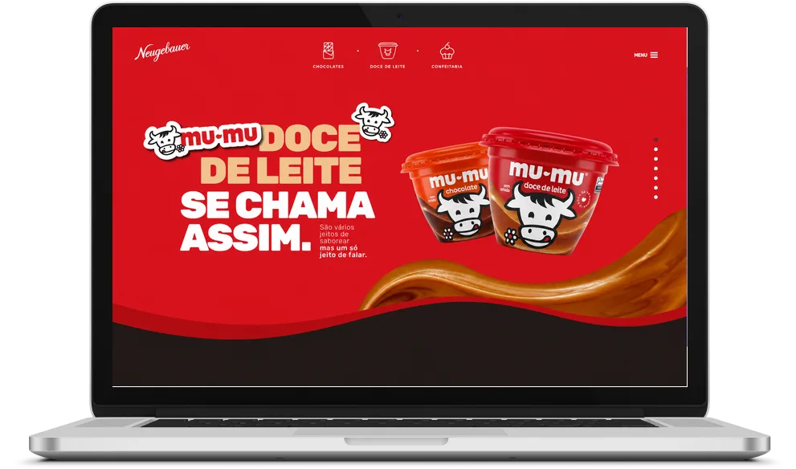
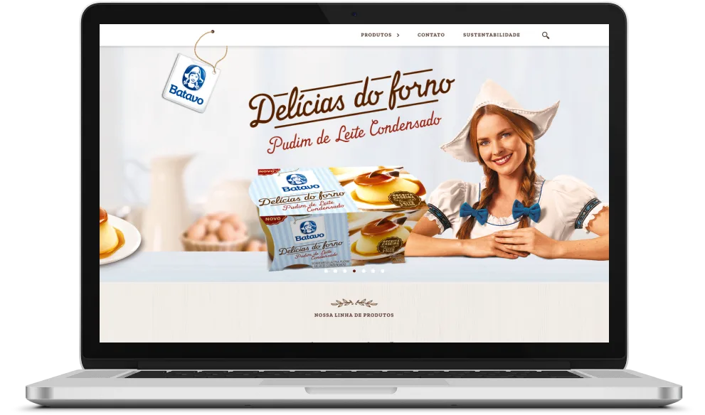
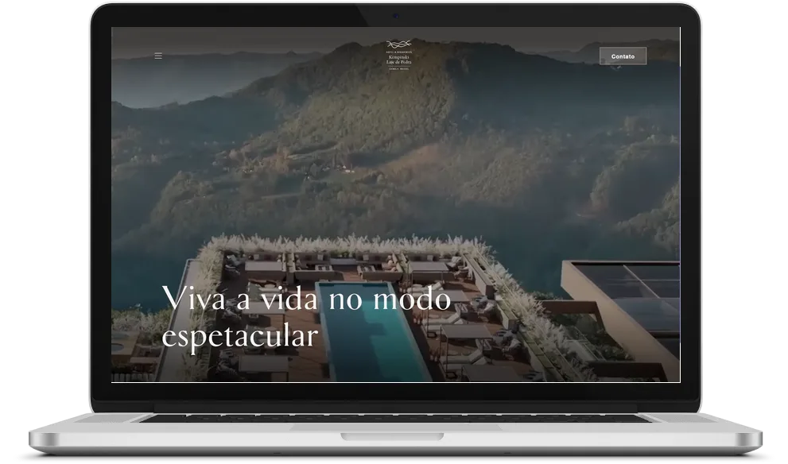
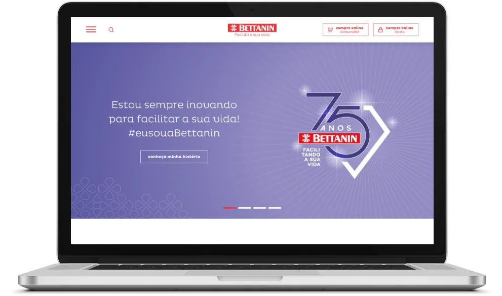
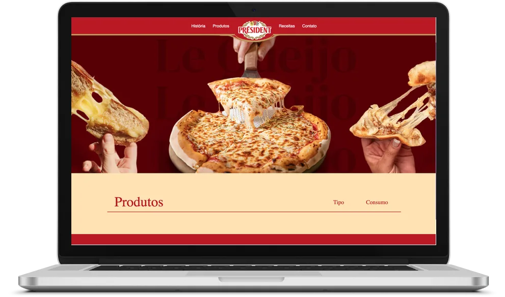
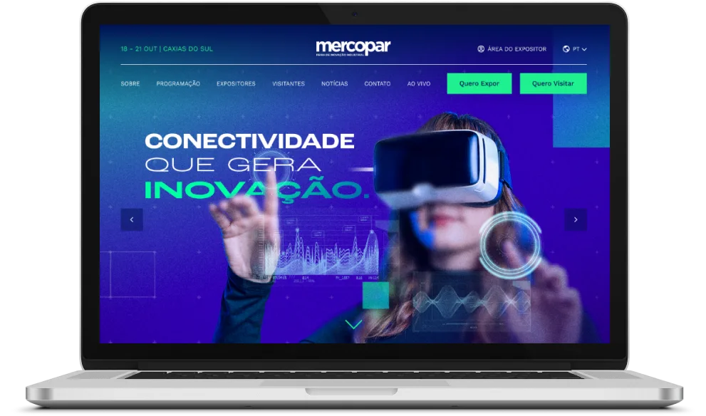

Coca-Cola Shoes
Experiência de marca para a linha de calçados, com visual forte e navegação que segura o visitante até a vitrine de produtos.
Desenvolvimento front-end · squad tech DZ Estúdio
Ver caseLanding pages & sites institucionais
Trabalho com agências e empresas há anos, em projetos para marcas que você conhece. Código próprio, sem tema pesado nem plugin desnecessário. E você fala direto comigo, do briefing à publicação.

Projetos que ajudei a colocar no ar
Projetos
Atuei no desenvolvimento destes projetos dentro do squad de tecnologia da DZ Estúdio, ao lado dos times de design e conteúdo.

Experiência de marca para a linha de calçados, com visual forte e navegação que segura o visitante até a vitrine de produtos.
Desenvolvimento front-end · squad tech DZ Estúdio
Ver case
Plataforma de conteúdo e cursos para profissionais de bar: área logada, trilhas de aprendizado e catálogo de conteúdo.
Desenvolvimento front-end · squad tech DZ Estúdio
Ver site ao vivo
Vitrine digital para uma das marcas de chocolate mais tradicionais do Brasil, com catálogo de produtos e território de marca.
Desenvolvimento front-end · squad tech DZ Estúdio
Ver site ao vivo
Página de lançamento de produto, pensada para apresentar o item novo e levar o consumidor até o ponto de compra.
Desenvolvimento front-end · squad tech DZ Estúdio
Ver case
Site do hotel de luxo, construído para transformar visita em reserva: apresentação das suítes, estrutura e caminho direto para a reserva.
Desenvolvimento front-end · squad tech DZ Estúdio
Ver site ao vivo
Presença online da marca de utilidades domésticas, organizando um catálogo grande de forma que o consumidor ache o produto certo.
Desenvolvimento front-end · squad tech DZ Estúdio
Ver site ao vivo
Site de marca que apresenta a linha de queijos e as receitas, apostando na tradição como argumento de compra.
Desenvolvimento front-end · squad tech DZ Estúdio
Ver site ao vivo
Site da feira industrial, conectando expositores e visitantes: programação, credenciamento e informações do evento em um só lugar.
Desenvolvimento front-end · squad tech DZ Estúdio
Ver caseO que eu entrego
Página única, focada em um objetivo só. Ideal para quem roda tráfego pago e precisa de um destino que transforme clique em contato.
Presença sólida para empresa cujo site atual não representa o tamanho do negócio. Credibilidade na primeira impressão.
Você já tem site, mas ele carrega devagar, quebra no celular ou não representa mais a empresa. Reformo o que trava sem começar do zero.
Processo
Sem surpresa no meio do caminho. Você sabe o que acontece em cada etapa e acompanha o resultado enquanto ele existe.
Entendo o negócio, quem é o cliente e o que precisa acontecer na página. Sem custo e sem compromisso.
Escopo, prazo e valor definidos por escrito. O que está incluso e o que não está, claro desde o começo.
Você acompanha por um link ao vivo, atualizado conforme avanço. Ajuste no meio do caminho é esperado, não problema.
Página no ar, domínio configurado e testada em celular e desktop antes de você mostrar pra alguém.
Depois do ar eu não sumo. Ajuste pontual, dúvida ou correção continuam comigo.
Quem faz o trabalho
Sou o Renato. Todo o portfólio acima é trabalho que fiz no squad de tecnologia da DZ Estúdio. Cliente grande, prazo de agência, página que não pode cair no lançamento.
Aqui não tem camada de atendimento. Quem ouve o briefing é quem escreve o código, então o ajuste que você pede é feito, não agendado para a próxima reunião.
Trajetória
Superior em Análise e Desenvolvimento de Sistemas pelo Instituto Federal do Rio Grande do Sul.
Contato
Chama no WhatsApp que a gente continua a conversa por lá. Se não for pra mim, eu falo na hora, sem enrolar você.